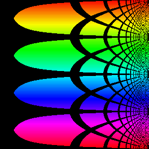
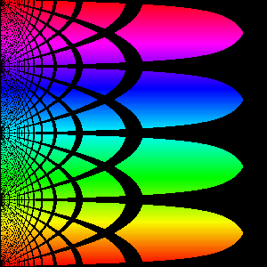
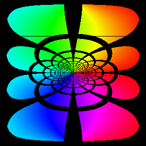
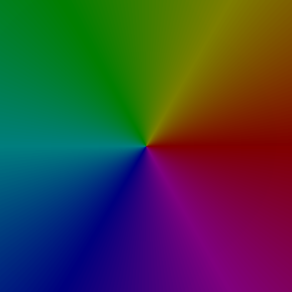
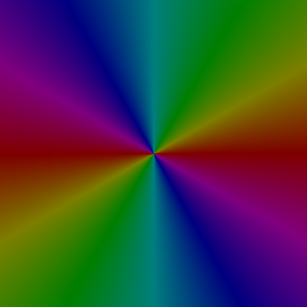
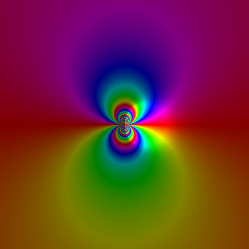

In atoms, electrons act as both waves and particles. As a result, as they orbit atoms, they can only form stable orbits when the circumference of that orbit is an integer multiple of their wavelength. This is because at all other orbits the electron destructively interferes with itself. This side project simulates that by adding various sine waves together. A variation of this code was used to make the image that is the front page of this website.
The name summarizes this project well. First, every point on the plane was assigned a colour based on the angle it forms with the x-axis and grid lines were overlaid. Two Mappings were then applied to get the final image, one map from the complex plane to a sphere and another from the sphere to a rectangle. The first map is a stereographic projection. This mapping sees a line between every point on the plane and the top of a sphere. The point where the line intersects the sphere is where that original point on the plane is mapped to. After this first mapping, every point is now mapped onto a unique point on the sphere, described by two angles. The final mapping just takes these two angles and plots one on the x-axis and the other on the y-axis. These two mappings effectively compress the entire complex plane down to a smaller square. This side project lets a user perform another function onto the complex plane beforehand, this way, they can see the effect of the function on the entire plane. For more information about complex numbers and functions on them, look at "Complex Functions".
Here are some examples. In order, these are the functions f(x) = x, f(x) = 1/x and f(x) = (x - 1)/(x + 1)
  The side project simulates a number of charged particles in an imaginary box with the same charge. For speed (and because it looks cooler) the charges do not repell each other, only the box. If you have the ability to run pygame, I recomend you run this on your machine as it looks significantly better than it does on the repl.it screen below. To start the animation, click the little screen and hit hte up key on your key board.
This side project implaments the functionalities of a deprecated python library called Turtle. Provided is a simple example program that draws the fractal known as the dragon curve.
We define a complex number as A + Bi for two real numbers A and B and we let i = the square root of negative one. Because complex numbers are defined as two real numbers, we can plot them on the x-y axises, and have the center represent the number 0 = 0 + 0i. We can also assign these numbers a unique colour. In this side project, I chose to give each number a unique hue dependent on the angle it forms with the x-axis and a unique brightness based on its distance from (0,0). We can then perform a function f(A + Bi) on this plane by colour the complex number described at the point (A,B) with the colour of the complex number f(A + Bi). Three examples are shown below with the functions f(z) = z, f(z) = z^2 and f(z) = e ^ (1/z)
  This side project is a simple recreation of the popular video game Terraria. Use space in order to remove the block under the cursor. Once this is done, a number will appear in the inventory section on the top left hand side of the screen. To place a block, hit one of the number keys and the corresponding block will be placed. This side project was made back in 2016, so these are the only functionalities I added at the time.